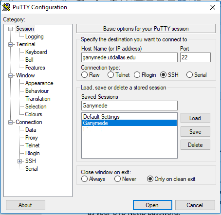
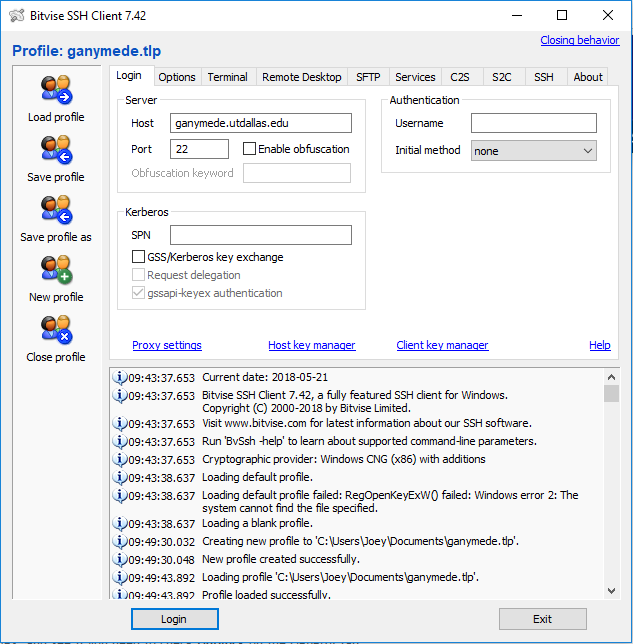

1 - Connecting to Europa¶
It is important to note that the individual nodes can only be accessed after the user has logged into the Europa node, and have a running job on compute nodes.
1.1 - Microsoft Windows¶
Once the user’s account has been created the user can access Europa using multiple Secure Shell (SSH) terminal software such as:
PuTTY
Bitwise
MobaXterm
This guide is written from the prospective that the user is connected to the UT Dallas network. If the user is working outside of the UT Dallas network, follow the VPN guide at https://www.utdallas.edu/oit/vpn/ or to connect via the command line the SSH guide at https://www.utdallas.edu/oit/howto/create-an-ssh-connection/ to connect to the campus securely.
1.1.1 - PuTTY:¶
PuTTY for the Microsoft Windows environment can be installed by going to www.putty.org. Download and install the latest version of Putty.

Once running PuTTY, in the Host Name section type europa.utdallas.edu. Go down to the saved sessions section, name the server with a meaningful name (in this case Europa) and press save. By doing this, time can be saved in the future by clicking your particular saved session and pressing load. Once loaded into the host name, click on the open button.

A Putty Security Alert window will open for the first time prompting you for a Yes/No/Cancel answer to the question of saving a new host key. Click the Yes button and now you will be asked for login-id and password. Your login-id is your UTD NetID and your password is the same as your UTD NetID password.
1.1.2 - Bitvise:¶
Bitvise can be installed by going to https://www.bitvise.com/index and pressing the download tab across the top banner. Press the first option, Download Bitvise SSH Client (Tunnelier) the press Bitvise SSH Client Installer and follow the instructions for to install the software. Similar to PuTTY, the Host Name section type europa.utdallas.edu. Go down to the “Save profile as” button, name the file with a meaningful name (in this case europa.tlp) and press save. By doing this, time can be saved in the future by clicking “Load profile”. Once loaded into the host name, click on the Login button.
1.1.3 - MobaXTerm:¶
MobaXterm can be installed from http://mobaxterm.mobatek.net/download.html. The program can be demo-ed from site http://mobaxterm.mobatek.net/demo.html.
To login, type ssh <NetID>@europa.utdallas.edu. Once logged in, all of the available Linux files and directory information will be displayed on the left white pane. Within the MobaXterm interface, one can securely copy files between Linux and Windows desktops. To open a file, right click on it and choosing option “open with default text editor”. Changes can then be made to a file and the changes can then be saved.
1.2 - For Mac Users¶
For MAC users MobaXterm is not available. Install XQuartz from https://www.xquartz.org. Additionally, the user could use terminal application as an SSH terminal client.
1.3 - For Linux Users¶
For Linux users, the ssh command is built into the operating system. To connect to the Europa server, open the terminal agent and type: ssh <NET-ID>@europa.utdallas.edu.
1.4 - Mailing List¶
Another way for users to connect to Europa is to connect with other users. The admin team has set up a mailing list that can allow users to interact with each other and find solutions through searchable archives. Because the admins are members of the group, timely answers and solutions pass through the group. The users should think of this as an additional form of documentation to reference. This list can be accessed at europausers@lists.utdallas.edu.